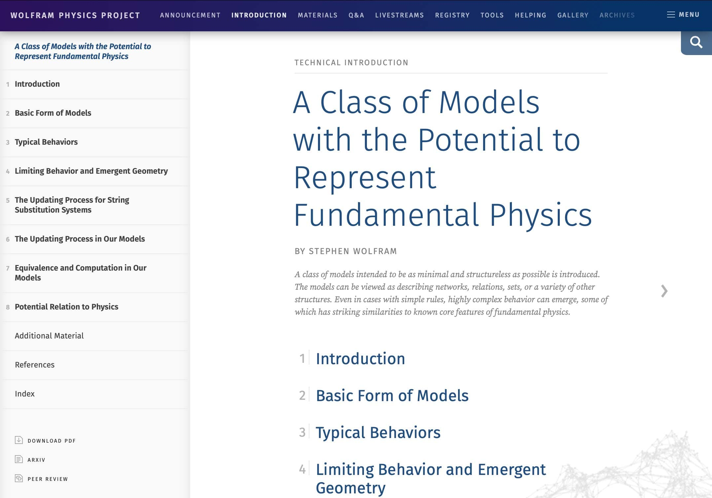

The Project
The Wolfram Physics Project is…well, that’s what made this a design challenge. This is a theoretical physics framework based off the CEO’s long-standing personal research project into cellular automata. In short…in as much as I can understand it and summarize it…it is an exploration of how complex physical phenomena can evolve from relatively simple initial conditions and computational rules.
(The boss summarizes it here. There’s really quite a lot of graph theory.)
This was a rapidly evolving design project to launch a signifcant web presence for this material, encompassing a wide variety of designs, including an online book, an archival materials file browser, and research gallery views.

The Goals
- Communicate. Design an attractive, vibrant site to present this physics theory, balancing the academic content with bold and colorful visuals.
- Systematize. Create a robust design system that allowed quick hand-off to developers.
- Iterate. Develop a design pipeline to rapidly iterate on constantly evolving incoming content.
The Constraints
- Subject Knowledge. The project’s content was technical. Very technical. I had to rely on fundamental design principles and the ability to research and adapt to challenging content to adapt on the fly to present the material.1
- Challenging Project Conditions. We started this project in March 2020. As the COVID pandemic began in earnest. Though we were already a heavily remote work-centric company, moving the entire workforce to work-from-home was not without friction.
- 1 (I have a perfunctory knowledge of general & special relativity, quantum mechanics, and cosmology, but once you get to causal invariance in graph theory, I shrug epistemically.)

The Process
-
Prototyping. The design of the site involved heavy use of in-browser prototyping, using a static site generator, as well as HTML/CSS/JS written by me. This allowed me to iterate rapidly based off evolving and incoming content, and produce deliverables that were immediately ready for our web team to deploy. Let’s walk through how some of the key technologies helped me get this project live…
- CSS Grid. Our web team had never utilized CSS grid in any capacity. But, it was extremely useful for several aspects of this site, and by providing CSS/SCSS to our developers, we rapidly deployed this without significant re-styling and re-structuring using older techniques.2
- Variables and Well-Formed SVGs. I specifically prototyped and designed this using CSS color variables to keep the styles consistent throughout the site, and made sure all of my assets were SVGs with well-formed internal DOMs so we could iterate and play with colors without painful manual regeneration of every graphics asset.
- Static Site Generators. I leaned heavily into my static site generator of choice to create functional prototypes of complex parts of the site, including what amounts to a full web-based file browser, to help demonstrate the feasibility of such features to stakeholders and developers.3
- Team Communication. As is somewhat obvious from my hand-waving introduction to the material, this is fairly esoteric stuff. The development of the style and content presentation was a result of many, many meetings with stakeholders, including the CEO and his physics team, which required a rapid uptake of the technical material.